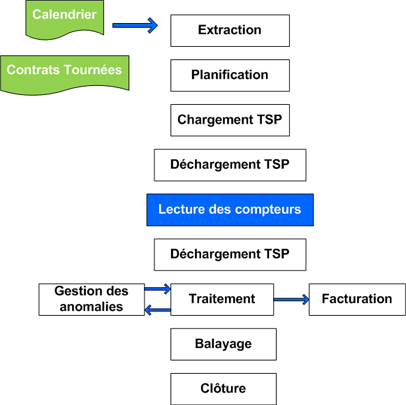

Foire aux questions
Branchement
1. Quelles sont les bases d’évaluation de coût des branchements ?
Le devis de branchement se compose généralement de deux rubriques principales :
- le coût de revient de la fournitures et travaux majoré des peines et soins couvrant les frais généraux (étude, déplacement suivi des travaux ...etc.).
- la participation aux infrastructures de base existantes et éventuellement les frais d’extension du réseau s'il y a lieu.
2. Quel est le délai de réalisation de branchement ?
La RADEEMA s’engage à :
- Etablir et envoyer le devis correspondant dans un délai de 7 jours ouvrable, si toutes les conditions requises sont satisfaites (voir menu : Votre premier contact)
- Réaliser les travaux de branchement dans un délai de 15 jours après le paiement du devis sauf cas de force majeur.
3. Qui est le propriétaire du branchement ?
Le branchement fait partie intégrante du réseau de distribution public dont l’entretien est assuré par la RADEEMA.
4. Pourquoi la RADEEMA exige le permis d’habiter pour la souscription de l’abonnement en électricité ?
La fourniture du permis d'habiter est exigée conformément aux dispositions de la loi
5. choix de l'emplacement du compteur ?
D'une manière générale, l’emplacement du compteur doit être choisi afin
qu’il
soit accessible aux agents RADEEMA, depuis la voie publique et en tout
temps.
Il peut être placé en limite de la propriété, soit :
- Sur la façade de votre habitation
- Sur le mur de clôture de votre lieu à desservir
- Dans un regard enterré, quand il s’agit d’un gros calibre
6. Les travaux d’exécution du branchement sont-ils obligatoirement réalisés par la RADEEMA ?
Pour des raisons de qualité et de conformité des travaux, les branchements
sont
réalisés exclusivement par la RADEEMA.
Pour certains cas les travaux de branchement peuvent être réalisés par
une
société agrée par la RADEEMA et après son accord.
7. Qui est responsable de la remise en état des lieux après réalisation du branchement ?
La remise en etat des lieux est effectuée sous le contrôle de la RADEEMA, par la partie ayant réalisée le branchement.
Abonnement
1. Quelles sont les formalités nécessaires pour m’accorder un abonnement eau et / ou électricité ?
Pour vous accorder un abonnement en eau ou en électricité il faut d’abord que vous soyez branché aux réseaux de distribution, si non vous devez établir une demande de branchement (voir menu : votre premier contact).
2. Dans quel délai j’aurais l’eau et/ou l’électricité ?
Dans le cas d’un branchement existant et après avoir payé les frais d’abonnement la RADEEMA s’engage à poser le compteur dans un délais maximum de deux jours ouvrables.
3. Qu’est ce qu’un abonnement
L'abonnement est un cantrat reliant la régie à son client et définit les
conditions de l'alimentation en eau et en électricité ainsi que les droits
et obligations des deux parties.
N.B: Le contrat d'eau potable englobe également les clauses
relatives au service de l'assainissement liquide.
4. Dans quels cas dois-je signer un nouveau contrat d'abonnement ?
Dans les cas suivants :
- Changement d’adresse de desserte
- Changement du calibre du compteur
- Changement du type d’usage
- Réabonnement suite à une résiliation
5. choix de l'emplacement du compteur ?
♦ Les abonnements provisoires sont accordés uniquement aux entreprises suite
demande écrite et après accord de la Direction Général.
♦ Ces abonnements doivent faire l’objet d’un contrat d’abonnement entre
les deux parties pour une durée maximale d’une année. La reconduction de ces
abonnements n’est accordée que pour les chantiers non achevés, et sur
demande de l’abonnée pour une durée maximale d’une année et après accord de
la Direction Générale.
Consommation
Principaux point de consommation d'eau
- Une chasse d'eau : de 10 à 12 litres
- Une douche : de 60 à 80 litres
- Un bain : de 150 à 200 litres
- Un lave-linge : de 70 à 120 litres
- Un lave-vaisselle : de 25 à 40 litres
- Le lavage de votre automobile :200 litres environ
- Arrosage de jardin: De 15 à 20 l /m2
Si vous contestez :Le montant de votre facture.
Si vous contestez le montant de la facture, considérant qu’il est excessif par apport à la moyenne des factures précédentes, vous êtes invité à se rapprocher du chargée de la clientèle de l'agence de votre rattachement ou contacter le centre de relation clientéles au N° 0802000123
Si vous contestez :Le bon fonctionnement du compteur.
Déposez une réclamation à l'agence de votre attachement qui se chargera de dépêcher un agent pour déposer et contrôler en votre présence la fiabilité du fonctionnement du compteur. Si une anomalie, est constatée (compteur défectueux) et génère un écart entre la quantité comptabilisée et celle débitée est supérieur à 5%, les frais de vérification ne vous seront pas facturés et votre compteur sera remplacé aux frais de la régie et la facture sera redressée à la baisse. Le cas échéant c'est-à-dire ledit écart est inférieur ou égal à 5%, les frais de vérification seront à votre charge.
Controle et suivi de la consommation
1. Comment puis-je contrôler ma consommation d’eau et/ou d’électricité ?
Pour contrôler votre consommation, nous vous conseillons de faire un relevé
mensuel et de vérifier les index des factures que vous recevez avec ceux du
compteur.
Les appareils de comptage sont librement accessibles, aussi vous pouvez
contrôler vous-même et à tout moment l’index du compteur exprimer en m3
(eau) ou en kWh (électricité).
Nous vous conseillons de vérifier votre consommation tous les mois.
2. Quels sont les astuces pour consommer moins ?
En eau :
- Fermez les robinets pendant que vous vous brossez les dents et pendant que vous vous savonnez sous la douche
- Ne faites pas tourner votre lave-vaisselle à demi plein
- Lavez votre automobile avec modération ou en station de lavage haute pression (consommation divisée par 4 par rapport à un lavage manuel)
- Arroser votre jardin la nuit
- Régler la chasse d’eau et la réparer même quand il y a une petite fuite
- Réparer les robinets quand ils ne ferment pas complètement
- Pour nettoyer, il faut utiliser le balai avec le jet d’eau
- Pour lavez une petite quantité de linge à la machine, il faut penser au programme économique
- En cas d’absence prolongée, prenez la précaution d’isoler votre installation en fermant le robinet après compteur
En électricité :
- Contrôlez le thermostat de votre chauffe eau, chauffage électrique, four Etc.
- Utilisez des ampoules économiques
- Voir si le compteur ne tourne pas à vide
- Pensez à éteindre la lumière quand on n’en a plus besoin
- Laissez le chauffe-eau allumé en permanence si vous vous en servez et contrôler le thermostat et la température désirée
- Assurer une isolation thermique de votre chauffe-eau. En cas d’absence prolongée, débranchez le
3. Comment puis-je connaître ma consommation moyenne ?
Pour connaître votre consommation moyenne, il vous suffit de demander un
relevé de consommation à votre Agence habituelle.
Nos chargés de clientèle sont à votre disposition pour vous faciliter
la lecture de ce document : période(s) de facturation, date et index de
lecture du compteur.
4. J’habite une toute petite maison, comment se fait il que je paie la facture la plus élevée du quartier ?
La consommation facturée (Eau ou Electricité) est lié à votre consommation réelle, indépendamment du type de votre habitation. La consommation dépend du niveau d’équipement de votre maison et des personnes qui y habitent (nombre de personnes ou de familles habitant le même logement).
5. Dois-je louer ou acheter mon compteur ?
Le compteur d’eau ou d’électricité est la propriété de la RADEEMA ; vous ne
faites que le louer moyennant une redevance mensuelle de location.
Il est fourni, étalonné et installé par nos services techniques sur le
branchement à l’origine de votre installation intérieure (dans un coffret ou
niche à compteur).
La Régie assure son entretien et son remplacement en cas de défaillance
dans le cadre d’une utilisation normale. Le calibre du compteur est
déterminé par nos services techniques sur la base de votre besoin.
6. Combien consomme un robinet ou un WC qui fuit ?
- Robinet : Un filet d’eau environ 130 000 litres par an ! Soit 130 m3 (soit plus de 1500 dirhams).
- Chasse d’eau ou WC Une chasse d’eau qui fuit consomme entre 45 m3 (45 000 litres) et 220 m3 (220 000 litres) d’eau par an !(Soit 500 à 3000 dirhams).
Rappel : Lavage d’une voiture 200 litres ! Un bain 200 litres ! Une douche entre 60 et 80 litres ! La vaisselle à la main 20 litres ! La toilette au lavabo 5 litres ! La cuisine de 5 à 8 litres ! Un lave vaisselle 40 litres !
7. Pourquoi je reçois une facture sans consommation ?
Une facture sans consommation est due soit :
- A l’inaccessibilité de votre compteur
- A l’arrêt du compteur (bloqué)
- A une erreur de lecture
8. L’étalonnage du compteur est-il gratuit ? A qui et comment dois-je formuler ma demande ?
Dans nos agences, nos chargés de clientèle sont à votre disposition pour
vous conseiller en cas de litige sur le fonctionnement de l’appareil de
comptage (compteur eau & électricité).
D’une manière générale, le client a le droit de demander à tout moment
la vérification de l’exactitude des consommations enregistrées par son
compteur.
Toutefois, les frais de vérification (étalonnage) seront pris en charge
par RADEEMA uniquement dans le cas ou le compteur, s’avère défectueux (Voir
question 2 au menu consommation).
Rappel : Nos compteurs sont tous d’un modèle
agréé et d’une grande fiabilité.
9. Pourquoi dois je payer les frais du compteur cassé alors qu’il ne m’appartient pas et ce sont vos techniciens qui l’ont posé sur la façade de ma maison ?
Au moment de la mise en service de votre installation le compteur est fourni et posé par RADEEMA dans votre coffret ou niche à compteur. Cette mesure est destinée à le protéger. Il vous donc appartient de veiller à la bonne protection de l’appareil de comptage.
10. Pourquoi on change les compteurs sans préavis ?
Dans le cadre de ses obligations contractuelles, RADEEMA doit maintenir en
bon état de fonctionnement ses installations et appareils de comptage. Aussi
il est appelée à remplacer les appareils de comptage qui s’avèrent
défectueux notamment les compteurs bloqués, âgés, et illisibles etc.
Un avis de passage vous est laissé sur place pour vous informer du
remplacement du compteur.
11. Dois-je installer moi-même le compteur ?
Le compteur ne peut être installé que par nos agents après vérification de vos installations intérieures et leur conformité aux normes en vigueur.
12. Quelle est ma responsabilité vis-à-vis de l’appareil de comptage (compteur eau & électricité) ?
Le compteur reste la propriété de RADEEMA qui assure son entretien ou son
remplacement dans les conditions normales d’utilisation.
Par contre, vous êtes responsable de votre compteur et, à ce titre,
vous devez prendre toutes les dispositions pour le protéger. Dans le cas
d’une détérioration indépendante de l’usage normal du compteur ; la remise
en état ou le remplacement du compteur vous sera facturée.
13. L’emplacement de mon compteur d’eau (regard) est noyé, que dois-je faire ?
Deux causes sont possibles :
- Soit une infiltration d’eau de pluie ou d’eau souterraine s’est produite. Si cette situation est exceptionnelle : vider le regard avec un récipient ou une pompe. Si cette situation est fréquente ; étudier avec nos services un nouvel emplacement pour le compteur.
- Soit une fuite s’est produite. Cette fuite peut être située avant ou après compteur. Vérifier la position de la fuite après avoir vidangé le regard. Si la fuite est avant compteur, nous interviendrons gratuitement sur simple demande de votre part (part écrit ou par téléphone). Si la fuite est après compteur, faites le plus rapidement possible appel au plombier de votre choix.
Rappel : Pour toutes informations ou réclamation veuillez contacter le centre de relation clientèles de la RADEEMA au numéro suivant : 0802000123.
Les Fuites
1. J’ai une fuite d’eau, que dois-je faire ?
S'assurer qu'il s'agit bien d'une fuite et non d'une forte consommation.
- Si la fuite est importante et que le compteur d'eau ne tourne pas, elle est sur le réseau de la RADEEMA : Ne vous inquiétez pas, la RADEEMA se charge de la réparation urgente de cette fuite veuillez appeler le 080 2000 123.
- Si la fuite est visible et que le compteur tourne ; Adressez-vous au plombier de votre choix le plus vite possible. En attendant sa visite, fermez le robinet après compteur pour isoler votre installation et arrêter ainsi la fuite d’eau.
- Si la fuite est invisible : Avant d'aller vous coucher, fermez tous les robinets de votre installation (et n'utilisez plus d'eau), puis relevez l’index de votre compteur. A votre réveil, contrôlez à nouveau l'index avant d'utiliser de l'eau. Si l'index a changé, elle existe une fuite d'eau sur votre installation privée après compteur.
2. J’ai constaté une fuite dans la rue et ma cave et/ou ma boutique risque d’être inondée, que dois-je faire ?
Un personnel qualifié est à votre écoute, n’hésitez donc pas à lui signalé
toutes les anomalies constatées sur les réseaux d’eau, d’assainissement et
d’électricité.
Soyez très précis sur le lieu de l’incident (rue, n° dans la rue,
lotissement, immeuble, quartier, etc.), cela améliorera le délai
d’intervention de nos équipes.
Dès l’enregistrement de votre appel, une équipe se déplacera rapidement
sur place afin d’étudier la situation (diagnostic) et de prendre les mesures
qui s’imposent.
3. Je n’ai aucun appareil branché et pourtant mon compteur d’électricité tourne !
Nous vous invitons à vous rapprocher d'un électricien pour localiser le ou
les mauvais contacts que vous avez au niveau de votre installation interne.
Si votre installation électrique est très ancienne, nous vous
conseillons aussi la mise à la terre de toutes vos prises de courant et
l’installation d’un disjoncteur différentiel en amont de votre installation
interne. Les défauts d’isolement sont dans ce cas détectés par votre
disjoncteur.
4. En cas de fuite dans mon installation intérieure, pourquoi dois-je payer un volume d’eau que je n’ai pas consommé ?
Le volume facturé est celui enregistré par votre compteur.
Aussi, nous vous conseillons de contrôler régulièrement le volume
enregistré par votre compteur d'eau afin de détecter, à temps, une
éventuelle fuite dans votre installation intérieure.
Relevé
Comment se fait le relevé d’index ?
Les agents de la régie procèdent au relevé de l’index des compteurs eau &
électricité (en m3 ou kWh) mensuellement et de manière régulière.
Leur passage permet en plus de la lecture du compteur, de noter
éventuellement les anomalies détectées sur le branchement (y compris le
compteur) et de les communiquées au service facturation et en aviser
également le client.
Les cas possibles :
- Avis de forte consommation :
- Avis pour un compteur inaccessible :
Dans quels cas on procède à l’estimation de ma consommation ?
A chaque fois que l’index du compteur n’a pas pu être relevé normalement
(compteur en arrêt ou bloqué, illisible, inaccessible, horlogerie cassée,
fraude… etc.).
L’estimation du volume consommé est déterminé, sur la base de la
moyenne de consommation de la même période de l’année précèdent celle
pendant laquelle l’estimation de la consommation s’impose suite à l’une des
causes citées ci-dessus, à moins que des indications plus précises
permettent d’évaluer ladite estimation sur d’autres bases tel que la pose
d’un nouveau compteur.
Cette estimation apparaîtra dans la rubrique « redressement » de la
facture.
Dans tous les cas, l’estimation de consommation ne doit pas, en
principe, vous pénaliser et doit se rapprocher le plus possible de votre
consommation réelle et tiendra compte des tranches et tarifs correspondants.
Comment savoir si ma consommation a été relevée ou estimée ?
Lorsqu’il s’agit d’une estimation le nouvel index et l’ancien index qui figurent sur votre facture restent les mêmes et la rubrique « redressement » est renseignée. Le contraire la dite rubrique ne portera pas d’indication.
Tarification
1. Les tarifs de vente d’eau, d’électricité et les redevances d’assainissement sont relativement chers !
Les tarifs appliqués par la RADEEMA restent dans la moyenne des prix
pratiqués dans les autres villes du Royaume. La structure tarifaire et les
prix unitaires de vente d’eau, d’électricité et de l’évacuation de
l’assainissement liquide sont fixés par les arrêtés du ministre délégué
auprès du premier ministre, chargé des affaires économiques et générales, et
ne relèvent pas des compétences de la RADEEMA.
Il y a lieu de préciser que les structures tarifaires des trois
exploitations tiennent comptes des foyers à faibles revenus, c’est ainsi
qu’une tranche sociale est réservée à cette catégorie de Client bénéficiant
d’un tarif de vente inférieur au coût de revient.
2. A quoi correspondent les différents montants de ma facture ?
La tarification comporte :
- Une parie fixe : se sont les rubriques « redevances paratarifaires » des factures de fournitures d'eau,d'assainissement liquide et d'électricité. A titre d'exemple, entretien du compteur et du branchement, location du compteur,.
- Une partie variable : elle est proportionnelle à votre consommation, la nouvelle facture éditée par le nouveau système de gestion de la chaine clientèle relate les fins détails du montant dû par rubrique..
3. Les tarifs sont ils les mêmes dans tous les quartiers de la ville ?
Pour un même usage, les tarifs sont les mêmes sur tout le périmètre d’action de la RADEEMA (tous les quartiers de Marrakech y compris la périphérie de la ville).
4. Les tarifs sont ils les mêmes durant toutes les saisons de l’année ?
Les tarifs d'eau et d'électricité sont les mêmes durant toutes les saisons
de l'année, à l'exception des clients moyenne tension agricoles.
Pour les particuliers (basse tension), il n'y a pas de tranche horaire.
5. Les tarifs de l'électricité à 110 V et à 220 V sont ils les mêmes ?
Les tarifs sont appliqués sur votre consommation exprimée en kWh et ne dépendent pas de la tension d'alimentation.
6. Nous sommes plusieurs familles à revenus faibles, alimentées par un seul compteur et nous recevons des factures élevées !
L'utilisation d'un seul compteur n'est pas à votre avantage car elle
engendre le passage en tranche supérieures à celle facturée au tarif social.
Aussi nous vous conseillons de revoir vos installations intérieures, pour
que chaque famille puisse disposer de son propre compteur individuel après
formulation d'une demande dans ce sens et paiement des frais d'abonnement.
Pour plus d'information veuillez prendre contact avec l'agence
commerciale de votre choix.
7. Pourquoi paie-t-on une TVA sur les redevances et autres éléments de la facture ?
C'est une application de la réglementation fiscale en vigueur (loi des finances). Elle est encaissée par la RADEEMA pour le compte de l'Etat (reversement mensuel). A ce jour, trois taux de TVA sont applicables sur les factures de fournitures d'eau et d’électricité et assainissement : 7%, 14% & 20%.
Paiement
1. Quels sont les différents modes de règlement ?
Pour régler votre facture vous avez le choix entre plusieurs formules et modes de paiement(espèces ou par chèque) : dans toute agence de votre choix ; à l’occasion du passage de l’encaisseur.
Dans nos agences :- Caisses multiservices ; en espèces ou par chèque
- Prélèvement automatique sur votre compte bancaire ou postal : des imprimés sont mis à votre disposition dans nos agences avec possibilité de les télécharger en cliquant sur le bouton (Télécharger). Nos chargés de clientèle peuvent vous conseiller sur les démarches à suivre
- Avance «Sur consommation», c’est une réserve d’argent que vous déposer sur votre compte client (eau & électricité) pour éviter la suspension de la fourniture d’eau et d’électricité même en cas d’absence prolongée. Ce nouveau produit est destiné surtout aux clients non résidents à Marrakech et aux Résidents Marocains à l’Etranger (RME)..
Pouvoir Régler ses factures à temps tout en évitant les délais d’attente est désormais possible grâce aux Espaces Services de proximité Tasshilat. En effet, vous avez la possibilité de régler vos factures RADEEMA tout près de chez vous, quel que soit le jour de la semaine et à l’heure qui vous convient. Pour cela Il suffit de vous présenter à l’un des 36 Espace Services présents sur Marrakech muni de votre facture. Après paiement le commerçant vous remet un reçu de règlement garanti par la RADEEMA.
Par prélèvement bancaire:vous êtes en déplacement ou trop occupé, la RADEEMA met à votre disposition le service de prélèvement automatique bancaire, un mode opérationnel, simple et fiable pour le réglement de vos factures de consommation en toute tranquilité. Il suffit de remplir le formulaire auprès de l'ensemble des agences RADEEMA ou de votre établissement bancaire.
Via le Guichet Automatique Bancaire:Eviter les déplacements et les longues files d’attentes en agences et gagner du temps grâce au paiement via les guichets automatiques bancaires (GAB) : un service pratique, rapide et sécurisé. 7J/7, de jour comme de nuit, vous pouvez régler votre facture en quelques minutes. Le service de paiement via les GAB est opérationnel au niveau des guichets automatiques de la Banque Populaire et la BMCE.
Via le Portail Internet RADEEMA:Besoin de souplesse et de liberté pour régler vos factures d’eau et/ou d’électricité ? Bénéficiez d’un service disponible à tout moment grâce au Paiement en ligne. Où que vous soyez et à n'importe quelle heure, payez votre facture via un moyen simple, rapide et sécurisé. Vous pouvez régler votre facture par carte bancaire directement depuis notre agence en ligne accessible sur l’adresse www.radeema.ma 24 h/24 et 7 j/7. La sécurité de la transaction et la confidentialité des informations saisies sont garantie.
2. J’ai des difficultés passagères de paiement : pouvez vous m’accorder un échéancier ?
Si votre facture est élevée suite a une consommation exceptionnelle, il est possible d’étudier son échelonnement avec le chef de l'agence de votre attachement sur une durée maximale de 12 mois.
CONSEIL : L’avance «sur consommation» est une formule de paiement originale, elle vous évite le risque de suspension de la fourniture d’eau et d’électricité, et surtout vous pouvez l’alimenter à votre gré (lorsque vos revenus le permettent).
Résiliation
Et si vous voulez
Augmentation ou diminution de la puissance souscrite
Chers clients moyenne tension, en choisissant une puissance souscrite
avoisinant votre puissance appelée, vous gagnez énormément au niveau de
votre facture de consommation.
Pièces à fournir :
♦ Demande écrite précisant la nouvelle puissance.
Il y a lieu de préciser que : les demandes pour augmentation de puissance
sont satisfaites après signature de l'avenant au contrat initial et paiement
des frais y affèrent. Quant aux demandes de diminution de puissance, elles
sont soumises aux mêmes conditions mais n'entrent en vigueur qu'après 6
mois.
Augmenter ou diminuer la puissance installée
La diminution et l’augmentation de la puissance fera l'objet d’un nouveau contrat établi selon la même procédure qui a donnée lieu au contrat initial.
Cas d’un abonné alimenté en BTLa procédure est identique à celle du premier contrat.
Augmentation du débit eau
- Demande branchement ou pré imprimé à signer par le client dans l’agence de rattachement
- Une photocopie de la CIN
- Copie de la facture eau
- Statut ou registre de commerce et délégation de signature pour les sociétés
- Photocopie de la CIN du représentant légal de l’entreprise (gérant)
Déplacer votre compteur
- Demande écrite ou pré imprimé à signer par le client
- Photocopie de la CIN
- Acte de propriété
- Autorisation légalisée du propriétaire en cas de locataire, Statut ou registre de commerce et délégation de signature pour les sociétés et personne morale
- Dernière facture de consommation d’eau ou reçu de paiement Eau et Assainissement
- Fiche des besoins en eau en m 3 / J (Cas des gros calibres)
- Participations à l’infrastructure.
- Frais d’extension de branchement et de raccordement.
- Peines et soins sur travaux.
Déconnexion du poste MT/BT Propriété de l’abonné
L’abonné présente une demande de déconnexion du poste MT/BT Propriété de
l’abonné à la Direction Générale
Il reçoit en retour un devis chiffrant le coût de l’opération.
Une date de programmation de la déconnexion est communiquée par la
suite à l’abonné via le Département Exploitation Electrcité.